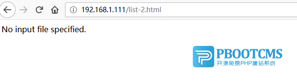

首先我们来看一下PbootCMS官方提供的伪静态规则：
<IfModule mod_rewrite.c>
Options +FollowSymlinks
RewriteEngine On
RewriteCond %{REQUEST_FILENAME} !-d
RewriteCond %{REQUEST_FILENAME} !-f
#如果页面出现"No input file specified." 请注释第一条，启用第二条
RewriteRule ^(.*)$ index.php/$1 [QSA,PT,L]
#RewriteRule ^(.*)$ index.php [E=PATH_INFO:$1,QSA,PT,L]
</IfModule>这里有一条很重要备注提示：
#如果页面出现"No input file specified." 请注释第一条，启用第二条，为什么同样是Apache服务器会有多种情况呢？
在Apache服务器上，采用模块化运行与采用fastcgi运行方式的伪静态是有差别的，系统默认开启的规则是Apache采用模块化运行方式时需要配置的伪静态规则，而如果您当前的Apache采用fastcgi模式运行PHP，那么使用默认伪静态规则就会出现“No input file specified.”的错误提示。原因是Apache采用fastcgi模式的时候，不能识别PATH_INFO路径，报错如下：

所以在windows下很多人安装PbootCMS的时候都没出现这个问题，因为大部分windows用户安装的Apache是采用模块化运行方式的，而在linux上以及在少量windows系统用户采用fastcgi运行模式。如果你采用fastcgi运行方式的时候出现此类提示，只需要把规则改为如下即可（即启用备用规则）：
RewriteRule ^(.*)$ index.php [E=PATH_INFO:$1,QSA,PT,L]